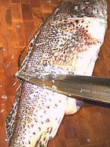

Commonly called "Sculpin" (which it is not), this fish is found from the central coast of California to the central cost of Baja California and the northern half of the Gulf of California, a rather short range as fish go. It can grow to 17 inches but the photo specimen was 14 inches and weighed 1 pounds 12 ounces.
More on Rockfish.
|

|
This is considered an outstanding eating fish. The flesh is white with just a thin coat of slightly darker flesh in some areas just under the skin. It is mild, but with a distinct flavor much favored by fish connoisseurs. Fillets poach very well, but as with other rock fish the fillet curls a bit to the skin side even though the skin has been removed. The flesh holds together well but flakes apart easily enough on the plate. Use delicate sauces and not too much of them with this fish. Be careful of the sharp spines on the dorsal, anal and pelvic fins - they are reputed to be venomous, and will at the least give you a painful stab. I've been pricked plenty of times with no ill effects save a little pain but some may be more sensitive, or maybe it takes a deeper poke. Buying: Scorpionfish is usually in good supply in the Asian fish markets here in Los Angeles, but the fishery is small and rockfish are highly regulated, so it is not likely to be found too far from the coast of Southern California. This is a moderately expensive fish at about 2013 US $2.99/pound, though I have occasionally been able to buy them for $1.99/pound "no cut, no clean". Scales: This fish is covered with small scales with moderate adhesion, but due to the limpness of this fish you will have to shave them off with the sharp edge of your prep knife. First scrape a bit to break into the coating of scales, then shave off the remaining scales being careful not to cut into the skin. Cleaning: This fish contains a lot of guts, they go well behind the vent and some need to be cut loose at the head end. Cut out the gills with kitchen shears if you are going to use the head. Filleting: This is a pretty easy fish to fillet. When you get to the ribcage, just cut the ribs from the backbone with kitchen shears and pull them from the fillet with your long nose pliers. They pull easily and cleanly. There are several substantial centerline spines near the front which need to be pulled. Yield: Due to its large head this is a low yield fish. A 2 pound 1-7/8 ounce fish yielded 11-7/8 ounces of skin-on fillet (35%). Skinned, which pretty much has to be done, it was still 11-5/16 ounces (33%) because the skin is very thin. This is a little higher than most will yield. Skin: The skin shrinks fiercely and does not relax, so it must be removed for any method of cooking. It removes easily and cleanly using the usual long knife and cutting board method. Stock: The head, bones and fins make a very light, rather insipid fish stock, so I don't usually use them. |